Shadowdancer
Melee damage, stealth; the dark between.
Assassins and scouts of the Syndicate, the Covenant and the Wildwood, who step through the shadows the dead gods left behind.
Spellbook
Role: Melee DPS (stealth) · Resource: Energy + Combo Points · Races: Goblins, The Risen, Bloodkin, Blight-Born, Sylvani, Beast-Touched, Corsairs, Half-Bloods
Uses shadow magic to turn invisible, teleport short distances and deal devastating ambush damage with daggers.
In Orvessa: shadowdancers step through the dark the dead gods left behind. With Varnhalt gone, the shadows are deeper than they have been for thousands of years, and better places to hide.
| Level | Spell | Effect |
|---|---|---|
| 1 | Dagger Strike | Basic attack |
| 4 | Shadowstep | Teleport behind the target |
| 8 | Vanish | Stealth and drop threat |
| 10 | Ambush | High damage from stealth |
| 14 | Garrote | Silencing DoT |
| 18 | Blinding Dust | Blinds |
| 22 | Umbral Cloak | Absorbs damage |
| 26 | Shadow Clone | Creates a copy of you |
| 32 | Eviscerate | Finisher |
| 38 | Fan of Shadows | AoE throw |
| 46 | Void Walk | Walk through enemies |
| 54 | Night's Embrace | Increased damage in darkness |
| 60 | Eclipse | Ultimate: darkness over the whole area, and you are invisible |
Talent trees
- Assassination: Lethal Poisons, Cold Blood, Backstab Mastery, Hemorrhage. Capstone: Death Mark.
- Veilwalker (stealth, utility): Improved Vanish, Pickpocket, Silent Steps, Shroud of Night. Capstone: Phantom, 15 s of unbreakable invisibility.
- Nightstep (mobility): Shadow Dash, Blink Strike, Evasive Tactics, Mirror Image. Capstone: Umbral Storm.
Gallery

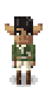

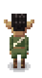

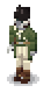

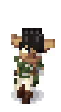

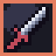

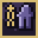

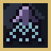

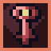

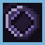

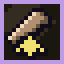

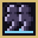

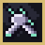